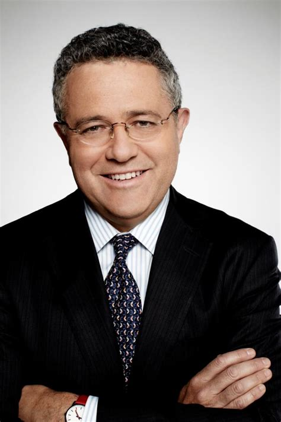
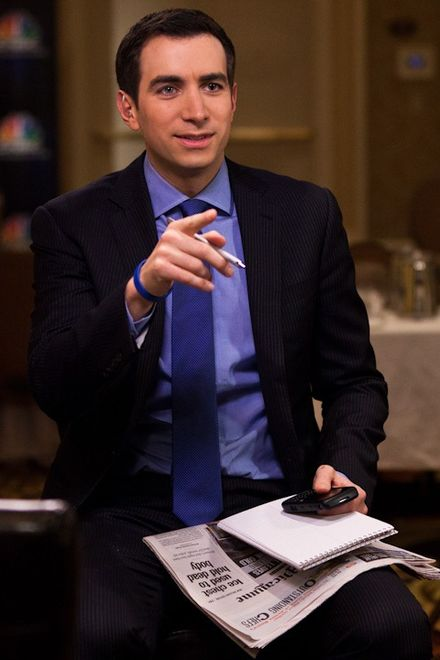

Our Mission
San Joaquin Valley Town Hall is a non-profit organization that is run by an all-volunteer board of directors. Our mission is to bring nationally and internattionaly renowned, thought-provoking speakers who inform, educate, and entertain our audience! As one of our members told us:
"Each year I give a ticket package to each of our family members. I think of it as the gift of knowledge and that is priceless."
Our Ticket Packages
- Season Package: $95
- Patron Package: $200
- Single Speaker: $25
This season's guests speakers
October
Jeffrey Toobin

November
Andrew Sorkin

December
Amy Chua